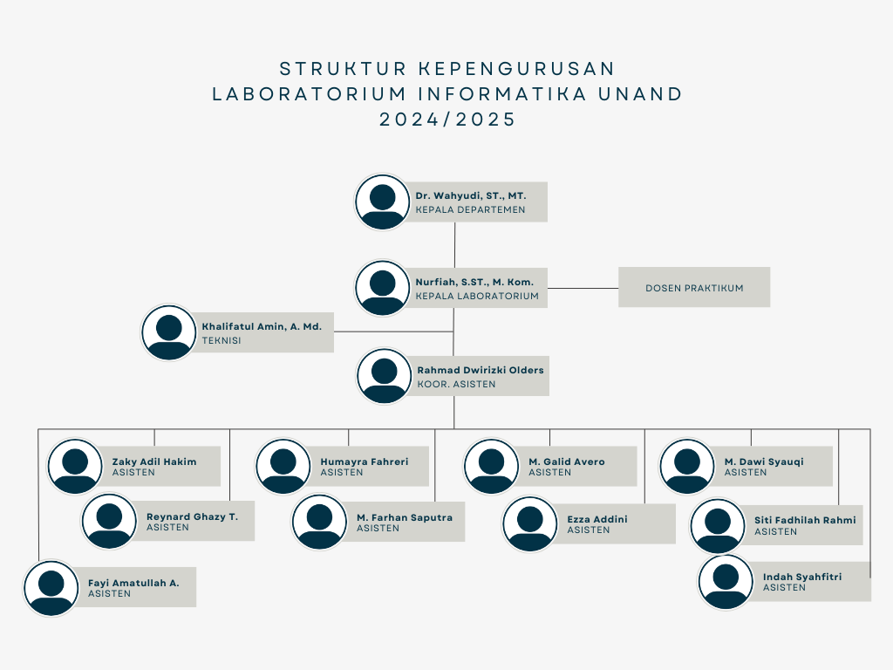

Tentang Laboratorium Informatika
Laboratoriun Informatika merupakan tempat bagi mahasiswa Informatika Universitas Andalas untuk melaksanakan tugas-tugasnya yang berkaitan dengan Informatika
Adanya Laboratorium ini bertujuan untuk memberikan fasilitas dan pengalaman kepada mahasiswa, mengaplikasikan teori dalam praktek, kolaborasi dalam proyek, pelatihan keterampilan, serta mendukung penelitian dan inovasi di bidang informatika.
Visi
"Menjadi laboratorium terkemuka yang mempelopori inovasi di bidang informatika, membentuk generasi masa depan yang berdaya melalui teknologi cerdas, berkelanjutan, dan responsif terhadap tantangan global."
Misi
Mengembangkan riset dan teknologi berbasis AI dan data science untuk menciptakan solusi digital yang mempermudah kehidupan manusia.
Mendorong kolaborasi dengan akademisi, industri, dan komunitas untuk menjembatani penelitian dan aplikasi nyata bagi masyarakat.
Membangun lingkungan belajar interaktif yang siap menghadapi revolusi digital dengan teknologi terbaru.

Sejarah
2022
Informatika merupakan jurusan baru yang ada Diunand dan merupakan jurusan ketiga dari fakultas teknologi Informasi yang berdiri pada 31 Maret 2022
2022
Laboratorium Informatika ini dibuat pada bulan April 2022 dikarenakan kebutuhan mahasiswa untuk menunjang ilmu dibidang Informatika
2023
Mulai merekrut asisten labor yang bertugas untuk membantu dalam mengurus labor if
2024
Dibuka kembali kepengurusan labor pada tahun kedua informatika yang direkrut pada tahun 2024

Poalca Valusio, Mahasiswa Informatika, Meraih Medali Emas di Ajang World Invention Competition and Exhabition 2024

Program Studi Informatika Meraih Penghargaan Terbaik 3 Program Studi yang Bekerjasama Dengan Dudi
Pratikum Laboratorium Informatika
Algoritma Pemrograman
Praktikum Algoritma Pemrograman adalah pembelajaran dasar logika pemrograman dan algoritma untuk memecahkan masalah melalui kode. Belajar struktur data, kontrol alur, dan pemrograman modular untuk membangun keterampilan analitis dalam penyusunan program yang efisien.
Struktur Data
Mempelajari cara mengelola dan mengatur data dalam bentuk yang efisien, seperti list, stack, queue, tree, dan graph, serta implementasinya dalam algoritma.

Basis Data
Memahami konsep dan implementasi sistem manajemen basis data, termasuk pemodelan data, penggunaan SQL, dan optimasi query.
Jaringan Komputer
Mengenal dasar-dasar jaringan komputer, termasuk protokol jaringan, arsitektur jaringan, dan teknik komunikasi data.
Pemrograman Berbasis Objek
Mengembangkan keterampilan dalam pemrograman menggunakan konsep objek, seperti enkapsulasi, pewarisan, dan polimorfisme dalam bahasa seperti Java atau C++.
Sistem Operasi
Mempelajari cara kerja sistem operasi dalam mengelola hardware dan software, seperti manajemen memori, proses, dan sistem file.
Pembelajaran Mesin
Pengenalan pada algoritma pembelajaran mesin untuk membangun model yang mampu melakukan prediksi dan analisis data secara otomatis.
Pemrograman Web
Membuat aplikasi web dengan memanfaatkan HTML, CSS, JavaScript, serta framework backend dan frontend untuk pengembangan yang dinamis dan responsif.
Deep Learning
Menggunakan jaringan saraf dalam untuk memecahkan masalah kompleks, seperti pengenalan gambar atau pemrosesan bahasa alami.
Big Data
Mengelola dan menganalisis data dalam jumlah besar menggunakan alat dan teknik seperti Hadoop dan Spark untuk mengambil wawasan yang bermakna.
Aplikasi Mobile
Mengembangkan aplikasi mobile untuk platform Android atau iOS, mencakup desain UI/UX dan pemrograman menggunakan framework seperti Flutter atau Android Studio.